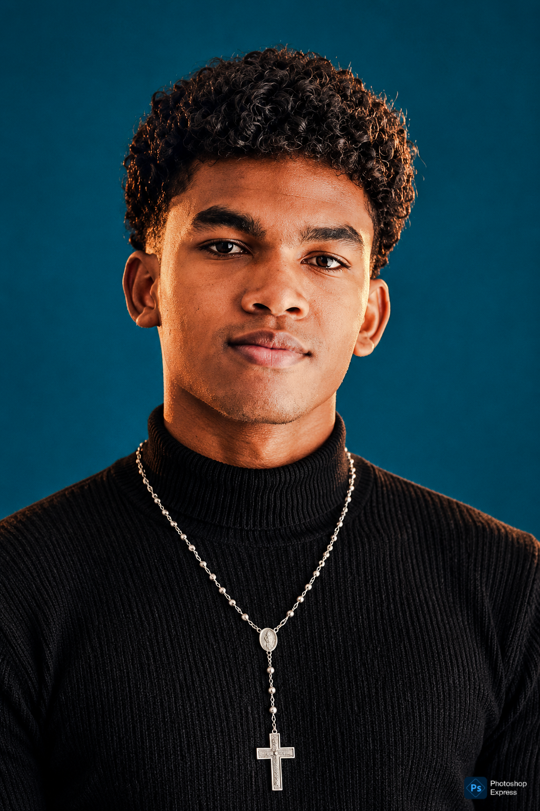

PHOTOGRAPHY / FILM / VISUAL DESIGNANTANANARIVO — MADAGASCAR
UN PROJET EN TÊTE ?
Donnez-lui
une image.
Une direction visuelle pensée pour être vue, ressentie et retenue.
ENTRER DANS L'UNIVERS↘ZOAVINTSOA / 001PHOTO · FILM · DESIGNMADAGASCAR ↓
“
THE INTENT
Une bonne image ne demande pas qu'on la regarde.
Elle fait qu'on ne peut pas détourner les yeux.
ZOAVINTSOA — VISUAL STORYTELLER
01 / FRAME
PHOTOGRAPHY
Le regard
avant tout.
Madagascar comme matière visuelle : paysages, lumière, texture et espace.


MADAGASCAR / TERRITOIRES / LUMIÈRE / TEXTURES
02 / MOTION
FILMMAKING
Donner du
mouvement.
De la prise de vue au montage et à l'étalonnage, chaque plan participe à la même histoire.
Une sélection de films réalisés, montés et racontés par Zoavintsoa.
03 / IDENTITY
VISUAL DESIGN
Créer une
signature.
Une identité qui ne cherche pas à faire du bruit : elle cherche à être reconnaissable.


ABOUT / ZOAVINTSOA
Une vision.
Un regard.
Une intention.
Photographie, réalisation, montage, étalonnage et création visuelle : une chaîne de production pensée comme un seul geste.
Basé à Madagascar, je construis des images qui donnent une forme claire aux idées.
FINAL FRAME
ON A UN
FILM À FAIRE.
Présentez-moi votre idée, votre date et vos besoins.
VOTRE PROJET →